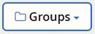

Notes de mise à jour
Notes de mise à jour
Planifiez votre première sauvegarde
 Suggérer des modifications
Suggérer des modifications
Lorsque vous configurez SaaS Backup pour Microsoft 365, vos données ne sont pas protégées par défaut. Vous devez transférer vos données du niveau non protégé vers l'un des niveaux protégés pour que la sauvegarde de vos données soit effectuée au cours de la prochaine sauvegarde planifiée du niveau sélectionné.
-
Dans le Tableau de bord, sélectionnez le service contenant les données non protégées.
-
Cliquez sur View en regard du nombre de boîtes aux lettres, de sites Mysites, de sites ou de groupes non protégés.
-
Sélectionnez les éléments à protéger.
-
Cliquez sur le menu groupes.

-
Sélectionnez Tier pour la stratégie de sauvegarde que vous souhaitez attribuer. Voir "Politiques de sauvegarde" pour une description des niveaux de stratégie de sauvegarde.
-
Cliquez sur appliquer.